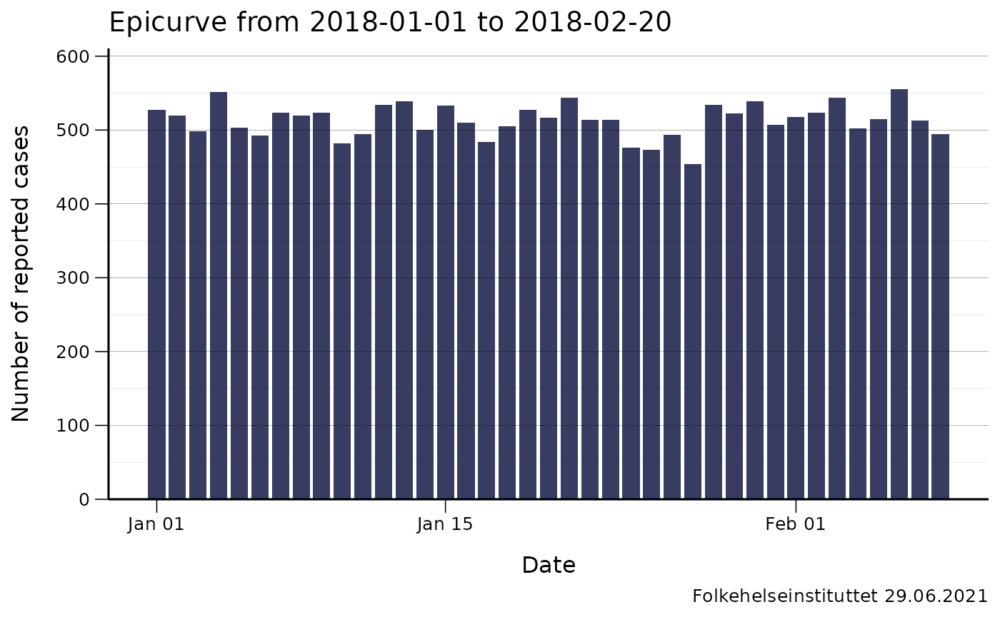
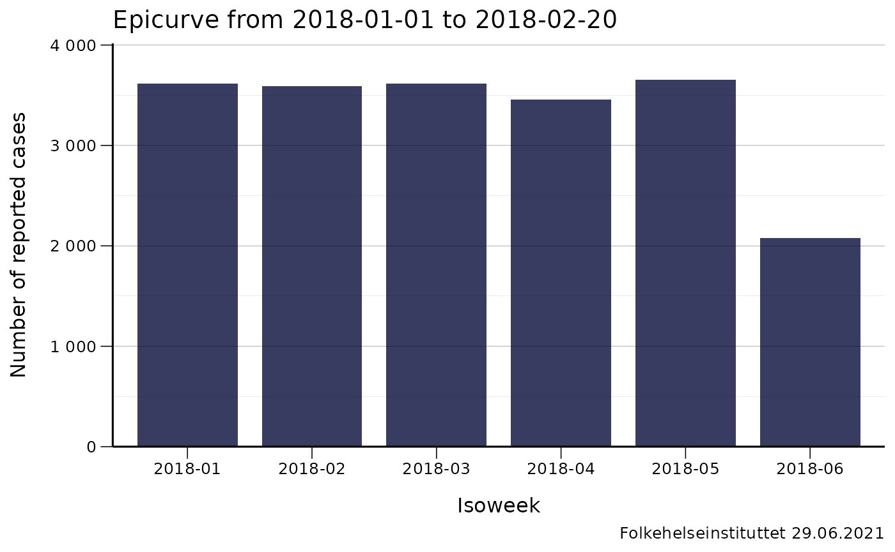
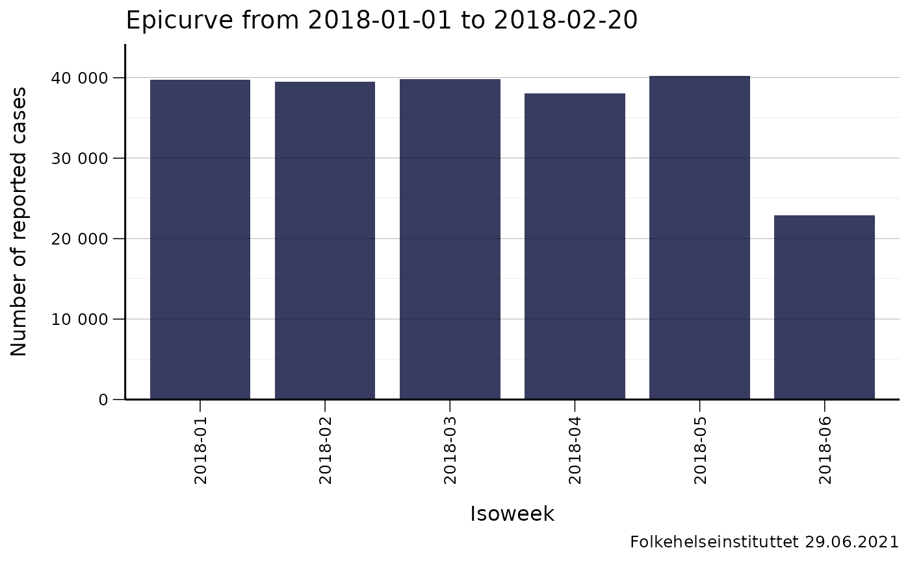
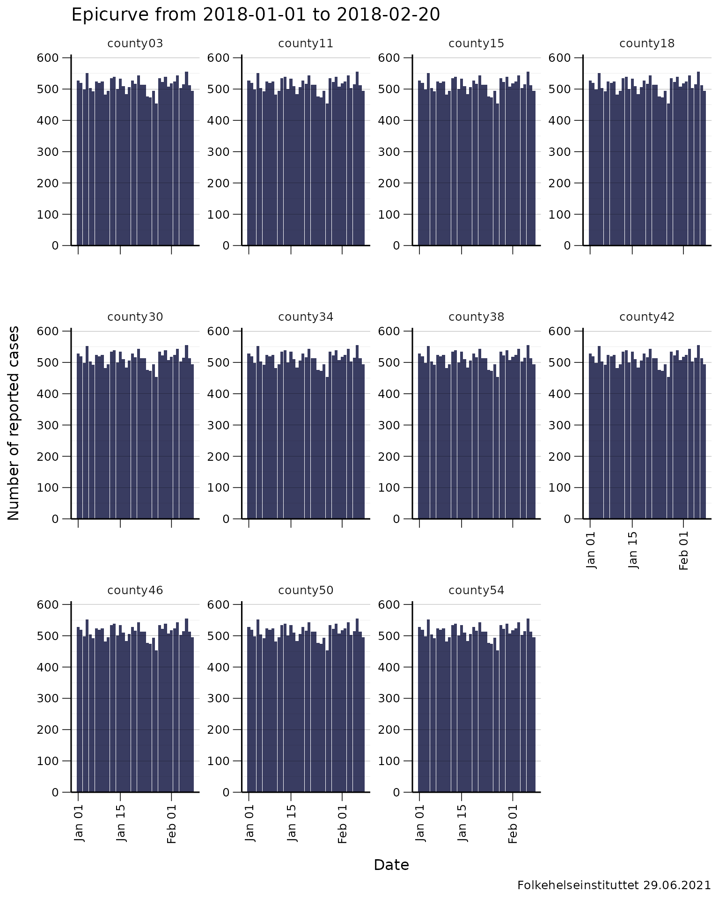
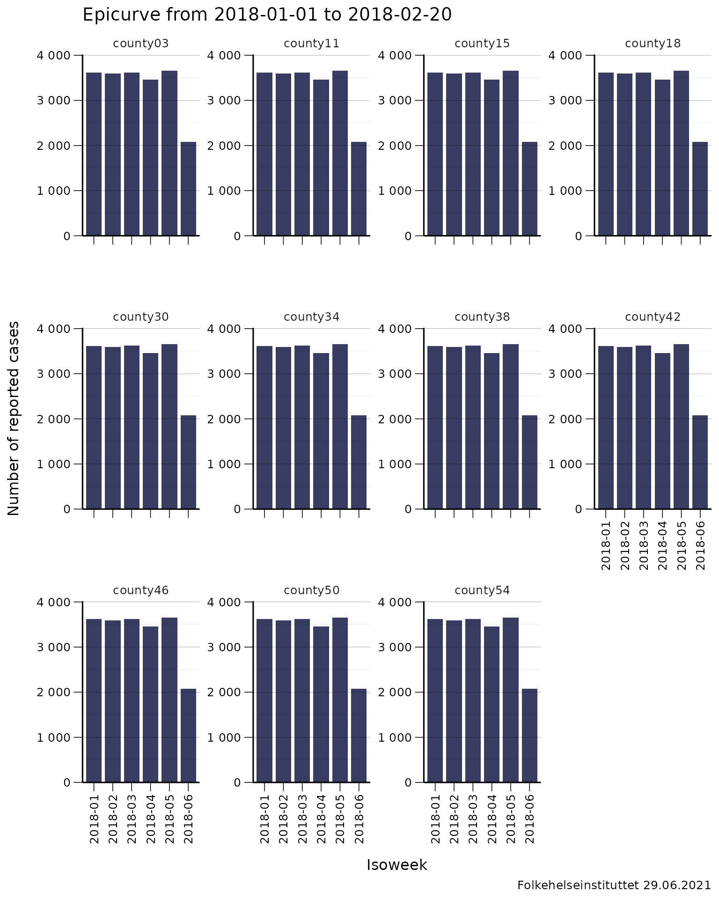
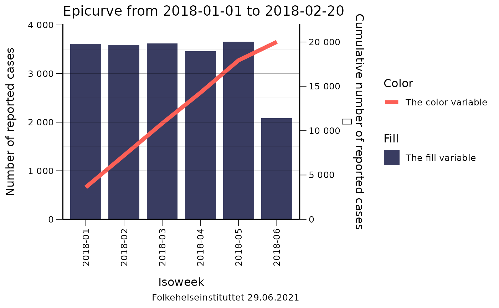

library(ggplot2)
library(data.table)
library(fhiplot)
#> fhiplot 2021.6.29 https://folkehelseinstituttet.github.io/fhiplotData
We generally start with a linelist dataset (make sure it is a data.table!).
set.seed(4)
dates <- sample(seq.Date(as.Date("2018-01-01"),
as.Date("2018-02-08"), 1),
20000,
replace = T)
d <- expand.grid(
location_code=unique(fhidata::norway_locations_b2020$county_code),
date = dates
)
# Convert to data.table
setDT(d)
# print
print(d)
#> location_code date
#> 1: county03 2018-01-11
#> 2: county11 2018-01-11
#> 3: county15 2018-01-11
#> 4: county18 2018-01-11
#> 5: county30 2018-01-11
#> ---
#> 219996: county38 2018-01-21
#> 219997: county42 2018-01-21
#> 219998: county46 2018-01-21
#> 219999: county50 2018-01-21
#> 220000: county54 2018-01-21We now:
- Convert this into a
data.table(in case it isn’t already) - Aggregate it to daily data (this dataset doesn’t contain any days with 0 cases)
- Create a ‘skeleton’ dataset that contains all days from the first to last day
- Merge the two datasets together (so you now have a dataset that contains days with 0 cases)
- Fill in ‘missing’ N’s with 0 (they are the dates that came from the skeleton dataset)
# Convert to data.table
setDT(d)
# aggregate
d <- d[,
.(
N = .N
),
keyby = .(
location_code,
date
)
]
# aggregated daily dataset that does not contain days with 0 cases
print(d)
#> location_code date N
#> 1: county03 2018-01-01 527
#> 2: county03 2018-01-02 519
#> 3: county03 2018-01-03 498
#> 4: county03 2018-01-04 551
#> 5: county03 2018-01-05 503
#> ---
#> 425: county54 2018-02-04 502
#> 426: county54 2018-02-05 514
#> 427: county54 2018-02-06 555
#> 428: county54 2018-02-07 512
#> 429: county54 2018-02-08 494
# create skeleton
skeleton <- data.table(expand.grid(
location_code = unique(fhidata::norway_locations_b2020$county_code),
date = seq.Date(min(d$date), max(d$date), 1)
))
# merge the two datasets together
d <- merge(d, skeleton, by=c("location_code", "date"), all=T)
# Fill in 'missing' Ns with 0
d[is.na(N), N := 0]
# Now you have a clean aggregated daily dataset that contains days with 0 cases!
print(d)
#> location_code date N
#> 1: county03 2018-01-01 527
#> 2: county03 2018-01-02 519
#> 3: county03 2018-01-03 498
#> 4: county03 2018-01-04 551
#> 5: county03 2018-01-05 503
#> ---
#> 425: county54 2018-02-04 502
#> 426: county54 2018-02-05 514
#> 427: county54 2018-02-06 555
#> 428: county54 2018-02-07 512
#> 429: county54 2018-02-08 494We can also create a weekly dataset:
# create 3 new variables:
d[, isoyearweek := fhi::isoyearweek(date)]
# aggregate down to weekly level
w <- d[,
.(
N = sum(N)
),
keyby = .(
location_code,
isoyearweek
)
]
print(w)
#> location_code isoyearweek N
#> 1: county03 2018-01 3613
#> 2: county03 2018-02 3589
#> 3: county03 2018-03 3616
#> 4: county03 2018-04 3455
#> 5: county03 2018-05 3652
#> 6: county03 2018-06 2075
#> 7: county11 2018-01 3613
#> 8: county11 2018-02 3589
#> 9: county11 2018-03 3616
#> 10: county11 2018-04 3455
#> 11: county11 2018-05 3652
#> 12: county11 2018-06 2075
#> 13: county15 2018-01 3613
#> 14: county15 2018-02 3589
#> 15: county15 2018-03 3616
#> 16: county15 2018-04 3455
#> 17: county15 2018-05 3652
#> 18: county15 2018-06 2075
#> 19: county18 2018-01 3613
#> 20: county18 2018-02 3589
#> 21: county18 2018-03 3616
#> 22: county18 2018-04 3455
#> 23: county18 2018-05 3652
#> 24: county18 2018-06 2075
#> 25: county30 2018-01 3613
#> 26: county30 2018-02 3589
#> 27: county30 2018-03 3616
#> 28: county30 2018-04 3455
#> 29: county30 2018-05 3652
#> 30: county30 2018-06 2075
#> 31: county34 2018-01 3613
#> 32: county34 2018-02 3589
#> 33: county34 2018-03 3616
#> 34: county34 2018-04 3455
#> 35: county34 2018-05 3652
#> 36: county34 2018-06 2075
#> 37: county38 2018-01 3613
#> 38: county38 2018-02 3589
#> 39: county38 2018-03 3616
#> 40: county38 2018-04 3455
#> 41: county38 2018-05 3652
#> 42: county38 2018-06 2075
#> 43: county42 2018-01 3613
#> 44: county42 2018-02 3589
#> 45: county42 2018-03 3616
#> 46: county42 2018-04 3455
#> 47: county42 2018-05 3652
#> 48: county42 2018-06 2075
#> 49: county46 2018-01 3613
#> 50: county46 2018-02 3589
#> 51: county46 2018-03 3616
#> 52: county46 2018-04 3455
#> 53: county46 2018-05 3652
#> 54: county46 2018-06 2075
#> 55: county50 2018-01 3613
#> 56: county50 2018-02 3589
#> 57: county50 2018-03 3616
#> 58: county50 2018-04 3455
#> 59: county50 2018-05 3652
#> 60: county50 2018-06 2075
#> 61: county54 2018-01 3613
#> 62: county54 2018-02 3589
#> 63: county54 2018-03 3616
#> 64: county54 2018-04 3455
#> 65: county54 2018-05 3652
#> 66: county54 2018-06 2075
#> location_code isoyearweek NGraphs for one geographical area
Daily epicurve for county01
q <- ggplot(d[location_code=="county03"], aes(x = date, y = N))
q <- q + geom_col(fill = fhiplot::base_color, width = 0.8)
q <- q + scale_x_date("Date")
q <- q + scale_y_continuous("Number of reported cases",
breaks = fhiplot::pretty_breaks(5),
expand = expansion(mult = c(0, 0.1))
)
q <- q + labs(title = "Epicurve from 2018-01-01 to 2018-02-20")
q <- q + labs(caption = fhi_caption())
q <- q + fhiplot::theme_fhi_lines_horizontal()
q
Weekly epicurve for county01
q <- ggplot(w[location_code=="county03"], aes(x = isoyearweek, y = N))
q <- q + geom_col(fill = fhiplot::base_color, width = 0.8)
q <- q + scale_x_discrete("Isoweek")
q <- q + scale_y_continuous("Number of reported cases",
breaks = fhiplot::pretty_breaks(5),
expand = expansion(mult = c(0, 0.1))
)
q <- q + labs(title = "Epicurve from 2018-01-01 to 2018-02-20")
q <- q + labs(caption = fhi_caption())
q <- q + fhiplot::theme_fhi_lines_horizontal()
q
Weekly epicurve with vertical x-axis labels
q <- ggplot(w, aes(x = isoyearweek, y = N))
q <- q + geom_col(fill = fhiplot::base_color, width = 0.8)
q <- q + scale_x_discrete("Isoweek")
q <- q + scale_y_continuous("Number of reported cases",
breaks = fhiplot::pretty_breaks(5),
expand = expansion(mult = c(0, 0.1))
)
q <- q + labs(title = "Epicurve from 2018-01-01 to 2018-02-20")
q <- q + labs(caption = fhi_caption())
q <- q + fhiplot::theme_fhi_lines_horizontal()
q <- q + fhiplot::set_x_axis_vertical()
q
Epicurves for multiple geographical areas
When we have multiple geographical areas, we use the function lemon::facet_rep_wrap to create multiple epicurves.
Daily epicurve for all geographical areas with vertical x-axis labels
q <- ggplot(d, aes(x = date, y = N))
q <- q + geom_col(fill = fhiplot::base_color, width = 0.8)
q <- q + lemon::facet_rep_wrap(~location_code, repeat.tick.labels = "y")
q <- q + fhiplot::scale_fill_fhi("Location",palette="primary")
q <- q + scale_x_date("Date")
q <- q + scale_y_continuous("Number of reported cases",
breaks = fhiplot::pretty_breaks(5),
expand = expansion(mult = c(0, 0.1))
)
q <- q + labs(title = "Epicurve from 2018-01-01 to 2018-02-20")
q <- q + labs(caption = fhi_caption())
q <- q + fhiplot::theme_fhi_lines_horizontal()
q <- q + fhiplot::set_x_axis_vertical()
q
Weekly epicurve with vertical x-axis labels
q <- ggplot(d, aes(x = isoyearweek, y = N))
q <- q + geom_col(fill = fhiplot::base_color, width = 0.8)
q <- q + lemon::facet_rep_wrap(~location_code, repeat.tick.labels = "y", ncol=4)
q <- q + scale_fill_fhi("Location",palette="primary")
q <- q + scale_x_discrete("Isoweek")
q <- q + scale_y_continuous("Number of reported cases",
breaks = fhiplot::pretty_breaks(5),
expand = expansion(mult = c(0, 0.1))
)
q <- q + labs(title = "Epicurve from 2018-01-01 to 2018-02-20")
q <- q + labs(caption = fhi_caption())
q <- q + theme_fhi_lines_horizontal()
q <- q + fhiplot::set_x_axis_vertical()
q
Coloured epicurves
Sometimes you would like to add colours to differentiate between different variables. This can be done through the fill attribute.
q <- ggplot(w[location_code %in% c(
"county03",
"county11",
"county15",
"county30",
"county34")],
aes(x = isoyearweek, y = N, fill = location_code))
q <- q + geom_col(width = 0.8)
q <- q + fhiplot::scale_fill_fhi("Location",palette="primary")
q <- q + scale_x_discrete("Isoweek")
q <- q + scale_y_continuous("Number of reported cases",
breaks = fhiplot::pretty_breaks(5),
expand = expansion(mult = c(0, 0.1))
)
q <- q + labs(title = "Epicurve from 2018-01-01 to 2018-02-20")
q <- q + labs(caption = fhi_caption())
q <- q + fhiplot::theme_fhi_lines_horizontal()
q <- q + fhiplot::set_x_axis_vertical()
q
Right axis on epicurve
Sometimes you would like to add colours to differentiate between different variables. This can be done through the fill attribute.
pd <- w[location_code %in% "county03"]
pd[, cum_n := cumsum(N)]
pd[, value_left := N]
pd[, value_right := cum_n]
max_left <- max(pd$value_left)
max_right <- max(pd$value_right)
# increase the space in the y-axis
max_left <- max(c(max_left, 5))
max_right <- max(c(max_right, 5))
pd[, scaled_value_right := value_right / max_right * max_left]
q <- ggplot(pd, aes(x = isoyearweek))
q <- q + geom_col(
mapping = aes(
y = value_left,
fill = "The fill variable",
),
width = 0.8
)
q <- q + geom_line(
mapping = aes(
y = scaled_value_right,
group = 1,
color = "The color variable"
),
lwd = 2
)
q <- q + scale_x_discrete("Isoweek")
q <- q + scale_y_continuous("Number of reported cases",
breaks = fhiplot::pretty_breaks(5),
expand = expansion(mult = c(0, 0.1)),
sec.axis = sec_axis(
name = "Cumulative number of reported cases\n",
~ . * max_right / max_left,
breaks = fhiplot::pretty_breaks(5),
labels = fhiplot::format_nor
)
)
q <- q + fhiplot::scale_fill_fhi("Fill", palette = "primary")
q <- q + fhiplot::scale_color_fhi("Color", palette = "posneg")
q <- q + labs(title = "Epicurve from 2018-01-01 to 2018-02-20")
q <- q + labs(caption = fhi_caption())
q <- q + fhiplot::theme_fhi_lines_horizontal()
q <- q + fhiplot::set_x_axis_vertical()
q